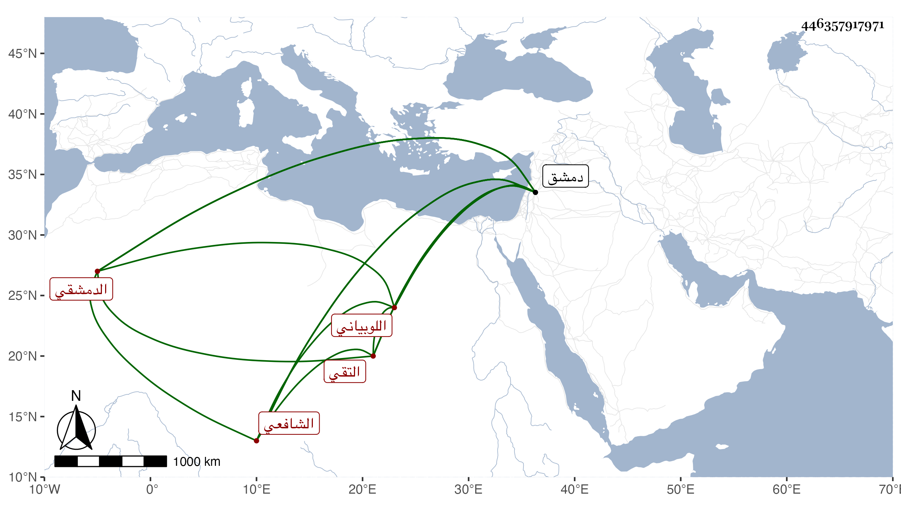

0902Sakhawi.DawLamic.ITO20230111-ara1.EIS1600.446357917971
Biography ID: 446357917971
112
أبو بكر بن عبد الرحمن بن رحال بمهملتين الثانية مشددة ابن منصور التقي اللوبياني ثم الدمشقي الشافعي . ولد في سنة أربع أو خمس وخمسين وسبعمائة وتفقه بجماعة إلى أن مهر وصار معدودا في الفضلاء وناب في الحكم وولي تدريس الشامية البرانية وغيرها ووصفه بعض أصحابنا بالإمام العالم الفقيه مفتي المسلمين ومفيدهم وكان قد سمع كما أخبر على ابن قواليح صحيح مسلم بفوت في أوله لم يضبط وحدث . ومات في ذي القعدة سنة ثمان وثلاثين بدمشق وكانت جنازته حافلة . وذكره شيخنا في أنبائه باختصار وقال غيره إنه قدم دمشق وهو كبير فقرأ التنبيه وعرضه في سنة خمس وسبعين واشتغل على الشرف الشريشي وطبقته ورافق الكفيري واندرج بصحبه وأذن له بالإفتاء وأعاد بالشامية الجوانية والناصرية وتصدر بالجامع وكان ممن أقام أيام الفتنة بدمشق فأوذي من التتار وقعد مع الشهود بعدها مدة ثم استنابه النجم بن حجي واستمر ينوب لغيره مدة مع توقفه في الأحكام وأفتى واستقر في تدريس القيمرية قال التقى الشهبي ودرس بها دروسا عجيبة مرة أو مرتين في الفلس ثم انتقل إلى الضمان وخرج من الدنيا ولم يفرغ منه ولم يكن يعرف سوى الفقه على طريقة المتقدمين لا عهد له بكلام المتأخرين وتحريراتهم مع التقتير على نفسه في عيشه وملبسه وخبرته بالتحصيل على كبر سنه وقد رغب له رفيقه الكفيري عن نصف تدريس العزيزية فلم يحصل له واشتد ألمه لذلك ولم يلبث أن رغب هو عن نصف تدريس القيمرية والإعادة بالشامية بعوض ليحيى بن العطار مع قرب عهده بلباس الجند وكونه ديوانيا وحصل في وظائفه بعد موته خبط كبير ولم يحصل لطلبة العلم منها شيء . مات في ليلة الأربعاء عاشر ذي القعدة وحضر جنازته خلق ودفن بباب الفراديس واستفيض أنه كان يحفظ الرافعي ومع ذلك فما ذكره التقى في طبقات الشافعية رحمه الله وعفا عنه .
